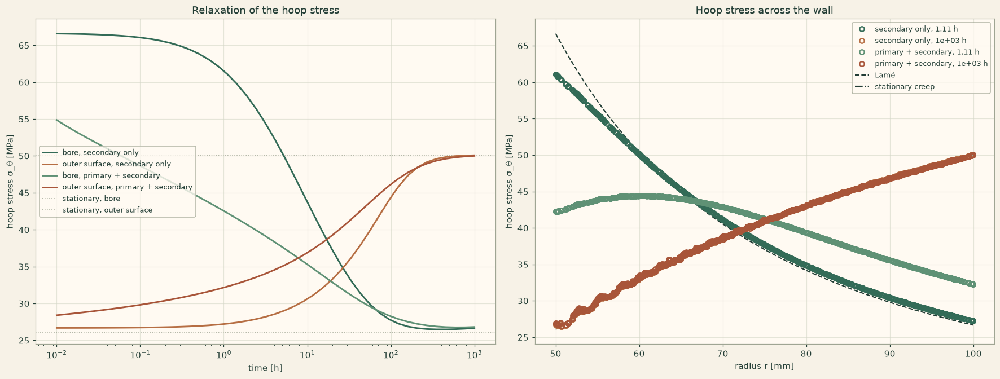

Docs › Examples › Primary and secondary creep in a hot thick-walled tube
Creep · 2D-axisymmetric
Primary and secondary creep in a hot thick-walled tube
A hot pressurised pipe creeps with a primary Norton-Bailey stage on top of its secondary Norton creep; both laws act together at every point of the wall.
Run locally with OneSimulation. The example downloads are free. Running them requires an activated runtime. Runtime Alpha 0.2.1a7 · CPython 3.13 on macOS (Apple Silicon), Ubuntu 22.04 (x86-64), and Windows x64. Installation and activation · View pilot plans. Scope of the reference checks.

What it computes
OneSimulation reads a ring of the pipe from a STEP file, cuts its meridian section and solves axisymmetric small-strain equilibrium on quadratic triangles with a creep material that adds a strain-hardening Norton-Bailey law and a Norton law, each with its own accumulated strain; a run with secondary creep alone is computed for comparison. The script that builds the STEP file comes with the notebook.
What it checks
Both materials reach the closed-form stationary creep stresses of the thick tube within 3.2 % of the pressure (rms 0.5 %) after 1000 h; with the primary stage the bore hoop stress relaxes halfway after 0.3 h instead of 9 h.
Geometry
The notebook starts at the import of the CAD file combined_primary_secondary_creep.step: STEP (AP242), readable by any CAD program, with the names of the faces that the boundary conditions use. Put it next to the notebook.

The geometry script
The script combined_primary_secondary_creep_geometry.py builds the geometry with the CAD objects of OneSimulation and writes the file. Change a dimension there, run it, and run the notebook again.
"""Geometry of the OneSimulation example "Primary and secondary creep in a hot thick-walled tube".
Builds a 90-degree sector of a thick-walled tube (inner radius 50 mm, outer radius 100 mm, a 20 mm
long ring of a long pipe, axis along z) with the CAD objects of OneSimulation, centred on the x axis,
and writes combined_primary_secondary_creep.step. The example computes on its meridian section y = 0. The
faces are named inner, outer, bottom (z = 0) and top (z = 20 mm).
"""
import numpy as np
from onesim.cad.d3 import AnnularCylinder
tube = AnnularCylinder(inner_radius=0.050, outer_radius=0.100, length=0.020)
sector = tube.sector(
np.pi / 2, axis=(0.0, 0.0, 1.0), start=(np.cos(-np.pi / 4), np.sin(-np.pi / 4), 0.0)
)
sector = sector.grouped(
inner=sector.select(
faces=lambda face: face.kind == "cylinder" and face.radius < 0.075
),
outer=sector.select(
faces=lambda face: face.kind == "cylinder" and face.radius > 0.075
),
bottom=sector.select(faces=lambda face: abs(face.center[2]) < 1e-9),
top=sector.select(faces=lambda face: abs(face.center[2] - 0.020) < 1e-9),
)
sector.save("combined_primary_secondary_creep.step")The notebook
The complete notebook, cell by cell. Run it to produce the figures and the comparison printout.
Real creep curves start with a primary stage, in which the creep rate falls, before the steady secondary stage. A common model adds the two contributions to the equivalent creep strain rate,
where each law keeps its own accumulated strain. Under constant stress the primary part dies out and the secondary law alone remains.
Setup. The tube of the companion example: inner radius \(a=50\) mm, outer radius \(b=100\) mm, internal pressure \(p=40\) MPa, long pipe (plane strain), \(E=180\) GPa, \(\nu=0.3\), temperature 850 K. Secondary creep: \(A_s=2\cdot10^{-48}\) Pa\(^{-5}\)s\(^{-1}\), \(n_s=5\). Primary creep: \(A_p=10^{-44}\) Pa\(^{-5}\)s\(^{-0.3}\), \(n_p=5\), \(m=0.3\). Two runs over 1000 h: secondary creep alone and both laws together. The ring comes from the CAD file combined_primary_secondary_creep.step, written by combined_primary_secondary_creep_geometry.py with the CAD objects of OneSimulation; the computation uses its meridian section.
| edge of the section | condition | |---|---| | inner | pressure \(p\) | | outer | free | | bottom, top | axial displacement 0 (long pipe) |
Reference. With the same stress exponent \(n=5\) in both laws, the creep strain rate is proportional to \(q^5\) at every point at any time, so the stresses tend to the stationary Norton distribution of the thick tube (Kraus, Creep Analysis, Wiley 1980, Sec. 4.2), with \(\beta=2/n\),
starting from the elastic Lamé stresses. The primary stage only changes how fast it gets there.
import numpy as np
from onesim.cad.exchange import load
from onesim.materials.solids import CreepMaterialPoint, PowerLawCreep
from onesim.meshing import TriangularMesher
from onesim.physics.solid_mechanics import SmallStrainSolid
from onesim.visualization import plots, theme
theme.set()Geometry and mesh
load returns the sector of the ring with its named faces; section cuts the meridian plane \(y=0\), whose \(x\) coordinate is the radius. Quadratic triangles of 3 mm.
ring = load("combined_primary_secondary_creep.step")
faces = ring.boundaries
meridian = ring.section((0, 1, 0), origin=(0, 0, 0))
edges = meridian.boundaries
mesh = TriangularMesher(target_size=0.003).generate(meridian)
fig = plots.figure(1, 2, size=(14, 6))
plots.geometry(
ring,
selection={
"inner (pressure)": faces.inner,
"outer": faces.outer,
"ends": faces.bottom | faces.top,
},
labels=False,
camera=plots.Camera(elevation=30, azimuth=-60),
title="Sector of the pipe ring",
ax=fig[0],
)
plots.mesh(
mesh,
groups=("all",),
legend=False,
title=f"Meridian section: {mesh.cell_count} quadratic triangles",
ax=fig[1],
)
plots.show()Model
Two CreepMaterialPoints for SmallStrainSolid with axisymmetric kinematics: one with the Norton law alone, one with the Norton-Bailey law added (strain hardening). The load steps grow logarithmically from 36 s to 1000 h.
inner, outer, pressure, exponent = 0.050, 0.100, 40e6, 5.0
secondary = PowerLawCreep(coefficient=2e-48, stress_exponent=exponent)
primary = PowerLawCreep(coefficient=1e-44, stress_exponent=exponent, time_exponent=0.3)
hour = 3600.0
times = np.r_[0.0, np.geomspace(0.01, 1000.0, 45)] * hour
materials = {
"secondary only": (secondary,),
"primary + secondary": (primary, secondary),
}
results = {
name: SmallStrainSolid(
youngs_modulus=180e9,
poisson_ratio=0.3,
kinematics="axisymmetric",
material_point=CreepMaterialPoint(laws=laws, hardening="strain"),
).solve(
mesh=mesh,
times=times,
order=2,
displacements=((edges.bottom, "z", 0.0), (edges.top, "z", 0.0)),
tractions=((edges.inner, (pressure, 0.0)),),
)
for name, laws in materials.items()
}
radius = results["secondary only"].quadrature_coordinates[:, 0]
bore, mantle = np.argmin(radius), np.argmax(radius)Comparison with the closed form
The stresses at the quadrature points after 1000 h against the stationary creep solution, the time at which the bore hoop stress has relaxed halfway, and the creep strain carried by each law.
beta, ratio = 2 / exponent, outer / inner
lame_hoop = lambda r: pressure / (ratio**2 - 1) * (1 + (outer / r) ** 2)
creep = {
"σ_r": lambda r: -pressure * ((outer / r) ** beta - 1) / (ratio**beta - 1),
"σ_z": lambda r: pressure
* (1 + (beta / 2 - 1) * (outer / r) ** beta)
/ (ratio**beta - 1),
"σ_θ": lambda r: pressure
* (1 + (beta - 1) * (outer / r) ** beta)
/ (ratio**beta - 1),
}
deviation = lambda values, reference: np.abs(values - reference(radius)) / pressure
for name, result in results.items():
print(
f"{name}: after 1000 h "
+ ", ".join(
f"{component} within {100 * deviation(result.stress[-1, :, k, k], creep[component]).max():.2f} % of p "
f"(rms {100 * np.sqrt(np.mean(deviation(result.stress[-1, :, k, k], creep[component]) ** 2)):.2f} %)"
for k, component in enumerate(creep)
)
)
for name, result in results.items():
halfway = (
times[
np.argmax(
result.stress[:, bore, 2, 2]
<= 0.5 * (lame_hoop(radius[bore]) + creep["σ_θ"](radius[bore]))
)
]
/ hour
)
print(f"{name}: bore hoop stress halfway relaxed after {halfway:.2f} h")
state = results["primary + secondary"].material_history[-1][0][0]
print(
f"creep strain at the bore after 1000 h: primary {100 * state.accumulated[0]:.3f} %, secondary {100 * state.accumulated[1]:.3f} % "
f"(secondary-only run: {100 * results['secondary only'].material_history[-1][0][0].equivalent_creep_strain:.3f} %)"
)Figure
Left the hoop stress at the bore and at the outer surface over time for both materials, with the stationary values; right the hoop stress across the wall after 1 h and after 1000 h. The primary stage carries most of the early redistribution, the secondary law the final state.
early = int(np.argmin(np.abs(times - hour)))
line = np.linspace(inner, outer, 200)
mid = np.abs(results["secondary only"].quadrature_coordinates[:, 1] - 0.010) < 0.004
fig = plots.figure(1, 2, size=(16, 6))
plots.line(
y={
f"{where}, {name}": (times[1:] / hour, result.stress[1:, index, 2, 2] / 1e6)
for name, result in results.items()
for where, index in (("bore", bore), ("outer surface", mantle))
},
hlines={
"stationary, bore": creep["σ_θ"](radius[bore]) / 1e6,
"stationary, outer surface": creep["σ_θ"](radius[mantle]) / 1e6,
},
scale="logx",
xlabel="time [h]",
ylabel="hoop stress σ_θ [MPa]",
title="Relaxation of the hoop stress",
legend="center left",
ax=fig[0],
)
plots.line(
points={
f"{name}, {times[k] / hour:.3g} h": (
1e3 * radius[mid],
result.stress[k, mid, 2, 2] / 1e6,
)
for name, result in results.items()
for k in (early, len(times) - 1)
},
reference={
"Lamé": (1e3 * line, lame_hoop(line) / 1e6),
"stationary creep": (1e3 * line, creep["σ_θ"](line) / 1e6),
},
xlabel="radius r [mm]",
ylabel="hoop stress σ_θ [MPa]",
title="Hoop stress across the wall",
legend="upper right",
ax=fig[1],
)
plots.show()Going further
Give the two laws different stress exponents: the stationary distribution then follows the secondary exponent, while the transient shows a mixture of both. Switch the primary law to time hardening to compare the two hardening rules in a non-uniform stress field.